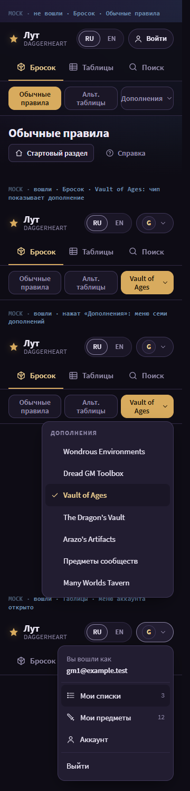
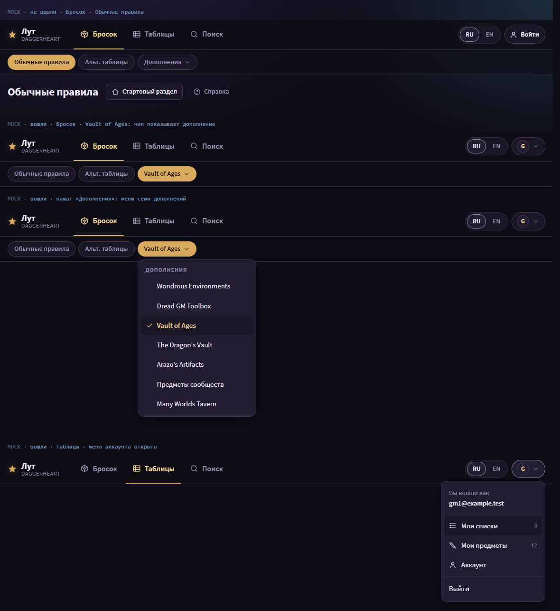
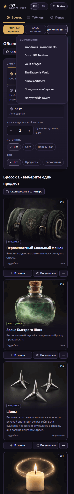
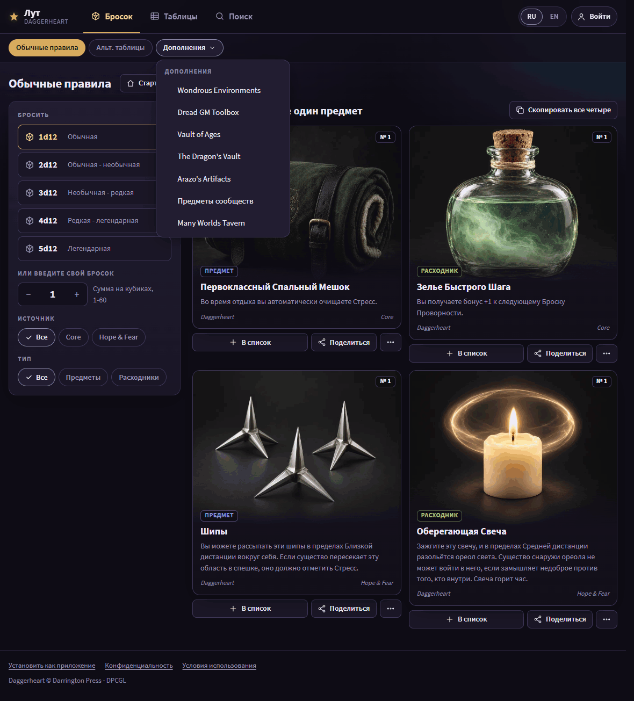
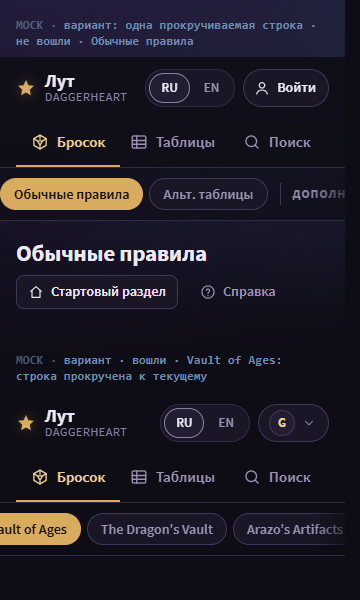
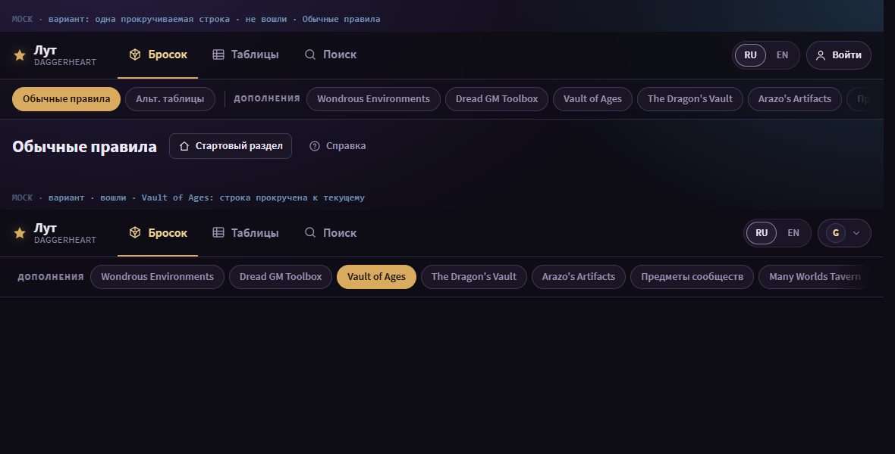

Task 57: open questions
Four decisions before batch 1. Each one has a recommended option (gold) and the trade-off it accepts. Answer them in the chat.
Q1. Mode labels on two lines at 360
Now in R: at 360 a mode chip can show its label on two lines («Обычные / правила»). The row itself never wraps.
| Option | What you see | Trade-off |
|---|---|---|
| Allow two lines | The chip text matches the page heading. | The chips are taller at 360. |
| Shorter labels | One line per chip («Обычные», «Альт.»). | The chip text differs from the heading. |


Q2. Supplements in one «Дополнения ▾» menu
Now in the app: a supplement page shows a panel of seven chips, which wraps over 4 lines at 360 (C48).
| Option | What you see | Trade-off |
|---|---|---|
| Menu replaces the chip panel | Three controls in one row. On a supplement page the chip shows its name, for example «Vault of Ages ▾». | Switching between supplements takes one more tap. |
| One row that scrolls | All nine modes in one row with an edge fade. | Some modes are off-screen until you scroll. |
| Keep the chip panel | Today's panel under the mode row. | C48 stays: a 4-line wrap at 360. |




Q3. CI fails on the mock scripts
Now: ESLint's typed lint cannot parse the 9 mock .js files under issues/57/mocks/, so CI on claude/57 is red. Prettier already passes.
| Option | What changes | Trade-off |
|---|---|---|
| Ignore task mocks in ESLint | One line, 'issues/*/mocks/**', in eslint.config.mjs, next to the existing 'work/**' scratch entry. | A config change that every later session runs under. |
| Move the scripts out | The mock scripts move outside the repository, next to the evidence. | The mock pages in the repository stop working; only the PNGs stay. |
Q4. R after your review
Now: R has 45 review states in index.html, grouped by screen. Batch 1 (font, tokens, type scale, gold rules, art placeholder) is implement-ready.
| Option | What happens | Trade-off |
|---|---|---|
| Approve R, notes later | Batch 1 starts. Notes on a screen become acceptance lines in the batch that owns that screen, and each batch shows its mock again before code. | A note that changes the foundation (font, tokens) may reopen batch 1. |
| Review first | You send notes on the 45 states; the planner updates R; then batch 1. | One more round before any code. |